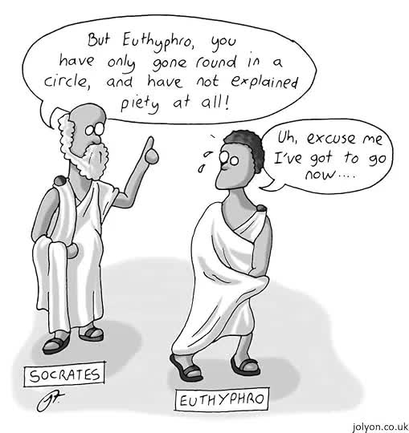

Euthyphro by Plato

Euthyphro by Plato.
First of all, it is worth noting that I read it before Apology of Socrates, but only after reading the dialogue itself did I learn that I should have read it first. So I would recommend reading the dialogue first, and only then Apology.
The dialogue itself is built around the wisdom that Socrates tries to obtain from Euthyphro. Euthyphro is bringing a case against his own father, and therefore Socrates believes that Euthyphro's knowledge of the divihe, and of piety and impiety, is so accurate that, when those things happened as he says, he has no fear of having acted impiously in bringing his father to trial.
The essence of the dialogue, as I understood it, lies in Euthyphro’s ability to lead Socrates in circles for about thirty pages. At the same time, Socrates genuinely needed his help because of the upcoming trial, in which Meletus, Anytus, and Lycon had brought charges against him.
But in the end, Socrates received nothing from him and went to court, one could say, empty-handed.
Before writing down my favorite passages from the dialogue, I will give a brief historical note on the case of Socrates:
Socrates was accused in 399 BCE in Athens. Athens had recently lost the Peloponnesian War to Sparta. The city was weakened, democracy had gone through a crisis, and power had temporarily been seized by oligarchs known as the Thirty Tyrants. Among the people associated with Socrates were very controversial figures, such as Alcibiades and Critias. Alcibiades had betrayed Athens, while Critias was one of the leaders of the Thirty Tyrants. Therefore, many Athenians began to see Socrates as a man whose influence was dangerous for the state.
Socrates himself was not directly involved in politics, but he constantly asked uncomfortable questions, criticized the self-confidence of politicians, poets, and craftsmen, and showed that many people did not actually know what they were talking about. For democratic Athens, this looked like an undermining of the authority of society and tradition.
The accusation of “corrupting the youth” did not mean that he taught something immoral in the ordinary sense. Rather, it meant that he taught young people to doubt, argue, and think critically about authority and social norms. After the political turmoil, Athenians were especially afraid of such ideas.
In the end, Socrates became a kind of scapegoat. He was put on trial not only because of religious accusations, but also because he was associated with dangerous pupils, criticized society, and seemed to pose a threat to the unstable Athenian democracy.
Passage I
—SOCRATES: Tell me then whether the thing carried is a carried thing because it is being carried, or for some other reason?
—EUTHYPHRO: No, that is the reason.
—SOCRATES: And the thing led is so because it is being led, and the thing seen because it is being seen?
—EUTHYPHRO: Certainly.
—SOCRATES: It is not being seen because it is a thing seen but on the contrary it is a thing seen because it is being seen; nor is it because it is something led that it is being led but because it is being led that it is something led; nor is something being carried because it is something carried, but it is something carried because it is being carried. Is what I want to say clear, Euthyphro? I want to say this, namely, that if anything is being changed or is being affected in any way, it is not being changed because it is something changed, but rather it is something changed because it is being changed; nor is it being affected because it is something affected, but it is something affected because it is being affected. Or do you not agree?
—EUTHYPHRO: I do.
—SOCRATES: Is something loved either something changed or something affected by something?
—EUTHYPHRO: Certainly.
—SOCRATES: So it is in the same case as the things just mentioned; it is not being loved by those who love it because it is something loved, but it is something loved because it is being loved by them?
—EUTHYPHRO: Necessarily.
—SOCRATES: What then do we say about the pious, Euthyphro? Surely that it is being loved by all the gods, according to what you say?
—EUTHYPHRO: Yes.
—SOCRATES: Is it being loved because it is pious, or for some other reason?
—EUTHYPHRO: For no other reason.
—SOCRATES: It is being loved then because it is pious, but it is not pious because it is being loved?
—EUTHYPHRO: Apparently.
—SOCRATES: And yet it is something loved and god-loved because it is being loved by the gods?
—EUTHYPHRO: Of course.
—SOCRATES: Then the god-loved is not the same as the pious, Euthyphro, nor the pious the same as the god-loved, as you say it is, but one differs from the other.
—EUTHYPHRO: How so, Socrates?
—SOCRATES: Because we agree that the pious is being loved for this reason, that it is pious, but it is not pious because it is being loved. Is that not so?
—EUTHYPHRO: Yes.
—SOCRATES: And that the god-loved, on the other hand, is so because it is being loved by the gods, by the very fact of being loved, but it is not being loved because it is god-loved.
—EUTHYPHRO: True.
Passage II
—SOCRATES: Do you then not realize now that you are saying that what is dear to the gods is the pious? Is this not the same as the godloved? Or is it not?
—EUTHYPHRO: It certainly is.
—SOCRATES: Either we were wrong when we agreed before, or, if we were right then, we are wrong now.
—EUTHYPHRO: That seems to be so.
—SOCRATES: So we must investigate again from the beginning what piety is, as I shall not willingly give up before I learn this. Do not think me unworthy, but concentrate your attention and tell the truth. For you know it, if any man does, and I must not let you go, like Proteus, before you tell me. If you had no clear knowledge of piety and impiety you would never have ventured to prosecute your old father for murder on behalf of a servant. For fear of the gods you would have been afraid to take the risk lest you should not be acting rightly, and would have been ashamed before men, but now I know well that you believe you have clear knowledge of piety and impiety. So tell me, my good Euthyphro, and do not hide what you think it is.
—EUTHYPHRO: Some other time, Socrates, for I am in a hurry now, and it is time for me to go.
—SOCRATES: What a thing to do, my friend! By going you have cast me down from a great hope I had, that I would learn from you the nature of the pious and the impious and so escape Meletus' indictment by showing him that I had acquired wisdom in divine matters from Euthyphro, and my ignorance would no longer cause me to be careless and inventive about such things, and that I would be better for the rest of my life.